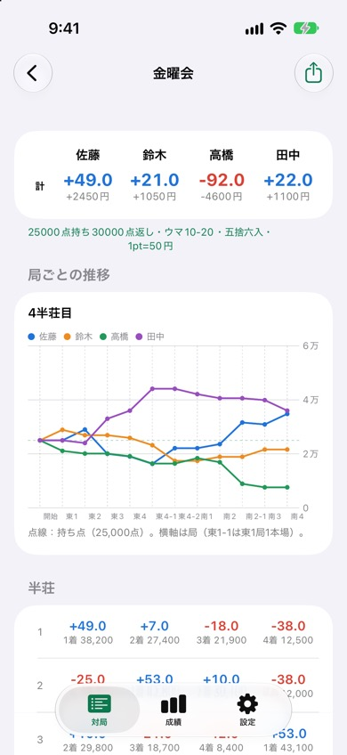
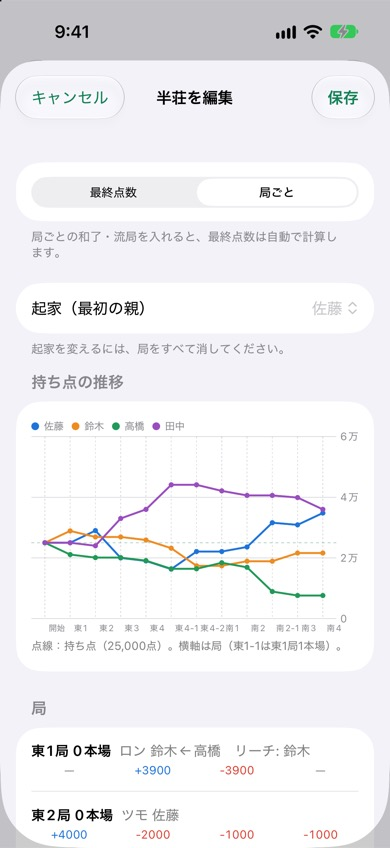

麻雀成績表
セット麻雀・健康麻雀の成績をつけるiPhoneアプリです。半荘ごとの点数を入れるだけで、ウマ・オカ込みのポイントと精算額を計算し、メンバーごとの通算成績を記録します。
iPhone（iOS 17以降）・無料（広告あり）


できること
- 精算：半荘の最終点数から順位とポイントを計算。持ち点・返し（オカ）、ウマ（5-10・10-20・10-30）、端数（五捨六入・四捨五入）、レートに対応。3人分を入れれば4人目は自動計算。
- 局ごとの記録（任意）：ロン・ツモ・流局とリーチを選ぶだけで、親・本場・供託を自動で追って点数を計算。符・翻から点数を選べます。
- 持ち点の推移グラフ：局ごとに記録した半荘は、開始から終局までの持ち点の動きをグラフで表示。
- iCloudで同卓者と共有：招待リンクを送ると、同じ対局を全員のアプリで見て、入力できます。
- 通算成績：メンバーごとの平均順位・1着率・4着率・収支を記録。
- 精算を送る：対局の結果を文章でLINEなどに送れます。
よくある質問
同卓者と共有するには何が必要ですか
全員がiPhoneにアプリを入れ、iCloudにサインインしている必要があります。対局の画面右上の人型ボタンから招待リンクを送り、受け取った人がリンクを開くと参加できます。作った人が対局を削除すると共有は終わり、参加者が削除するとその人だけが抜けます。
局ごとの入力は必須ですか
任意です。半荘の最終点数だけを入れることもできます。局ごとに入れた半荘は、持ち点の推移をグラフで見られます。ダブロン・チョンボには対応していません。終局時に残った供託はトップに入れます。
端数やウマ・オカはどう計算しますか
持ち点と返しの差をオカとして1位に入れ、ウマを順位で加えます。端数はなし・五捨六入・四捨五入から選べ、端数の差は1位が持ちます。同点の場合は同じ順位として、その順位どうしのウマ（1位ならオカも）を等分します。
広告を消せますか
「設定」→「広告を削除する」から、買い切り（300円）で広告を非表示にできます。機種変更後は「購入を復元」を押してください。
お問い合わせ
メール: tanacount.support@gmail.com
返信までお時間をいただく場合があります。
ほかのアプリ
麻雀何切る問題：何切る問題を自動で出題。打牌ごとの受け入れ枚数で解説、今日の5問つき
麻雀待ち判定：手牌から待ち牌・役・符・点数がわかる。打牌候補と役一覧つき
麻雀点数計算：符と翻から点数を自動計算する、卓に置いて使う麻雀の点数表示アプリ
麻雀点数計算ドリル：翻と符から点数を4択で答える、点数計算の練習問題アプリ